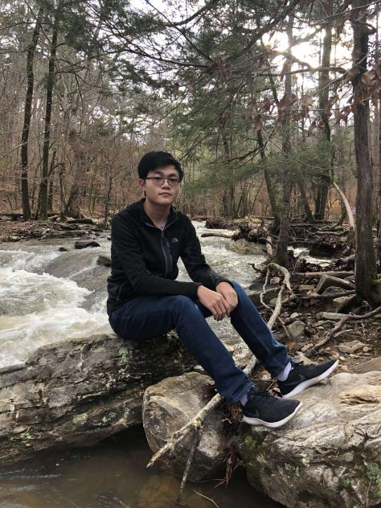

Howdy!
I'm Midong Zhou.
>


Thanks for visiting my website. My name is Midong Zhou and I am currently a Computer Engineering student
at Texas A&M university. My focus is mostly on Electrical engineering, ie analog and digital circuits,
digital VLSI circuits and systems, computer architecture and microprocessor design. although my major
focuses on more electrical engineering related topics, I also realize how important knowledge of
software is in today's software focused society. as such, I am also taking a decent number of software
engineering courses, and have learned a lot regarding the software side of my major. the topics I
currently have experience in are: programming languages (mainly python, c++, java), data structures,
analysis of algorithms, and operating systems. of course, in the future i hope to dive deeper into these
topics, and I will be updating this page as I continue in the path to my degree.
currently, outside of my classes, I am working on building a Arduino robot to navigate a maze and bring the "treasure"(basically a stress ball) located at the center to the exit, but with one caveat, the maze walls shift when the robot reaches the center and now it has to navigate a completely new maze. as you would expect, it is not the most efficient in that it takes along time to figure out the maze after the changes, my current goal is to make it faster, a bit like a Roomba but if your house changed everyday. In my free time, I enjoy playing the French horn, (I played this back in high school marching band and concert band) and playing badminton
if you ever want to talk about electrical or software engineering topics, or perhaps play a match or two of badminton don't hesitate to reach out to me on my social media! if you would prefer to email me, that works too!
currently, outside of my classes, I am working on building a Arduino robot to navigate a maze and bring the "treasure"(basically a stress ball) located at the center to the exit, but with one caveat, the maze walls shift when the robot reaches the center and now it has to navigate a completely new maze. as you would expect, it is not the most efficient in that it takes along time to figure out the maze after the changes, my current goal is to make it faster, a bit like a Roomba but if your house changed everyday. In my free time, I enjoy playing the French horn, (I played this back in high school marching band and concert band) and playing badminton
if you ever want to talk about electrical or software engineering topics, or perhaps play a match or two of badminton don't hesitate to reach out to me on my social media! if you would prefer to email me, that works too!

One of my favorite moments